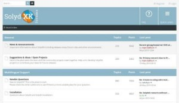

Thank you for using SolydXK
SolydXK is an open source desktop operating system for businesses, organizations and home users. Both SolydX and SolydK are based on Debian stable to ensure the greatest stability and security.
We have created a list of recommended software for businesses and home users which you can install in the next couple of pages.
Click on the Next button to get started.
Software | |
All software is built, maintained and checked by the community. Software databases called "repositories" are used to offer and maintain over 60,000 software packages. So, there is no need to download software from dubious web sites. You simply search and install the software you need with the Software Manager. |
|
Support | |
If you're new to SolydXK or whenever you get stuck, there is the SolydXK community to help you solve your problem. You can search the forum to find if your issue has already been solved or start a new topic to get help. |
 |
| Forum: https://forums.solydxk.com | |
|
The following channels are used to communicate to the SolydX and SolydK users: |
|